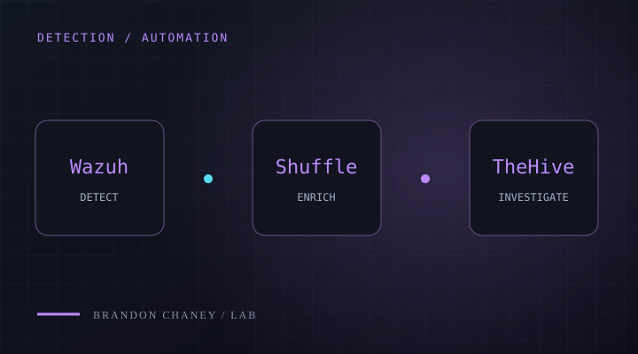
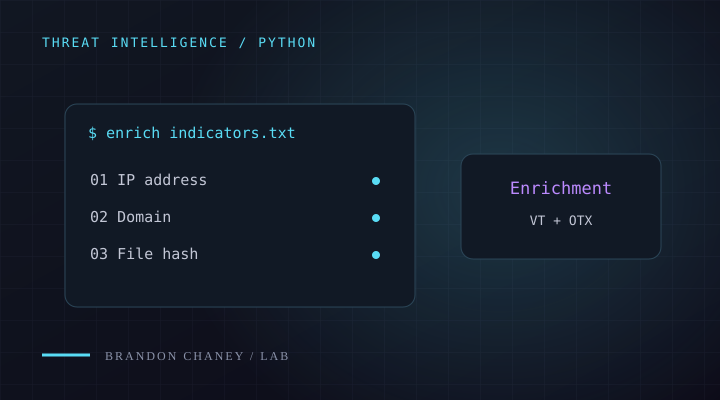
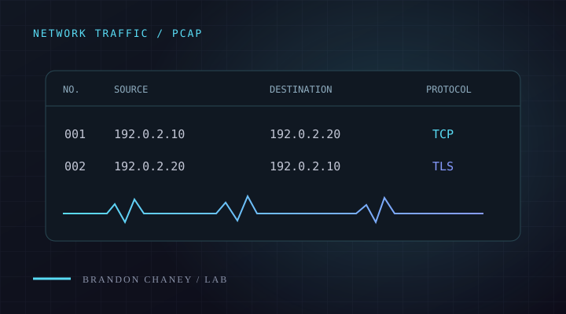
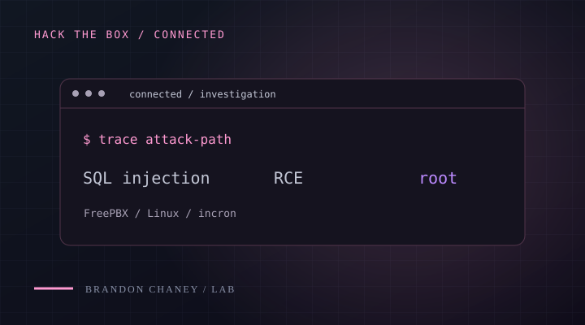

LetsDefend
SOC investigations
24
Investigations2
Paths completedProgress
SOC practiceAlert triage
SECURITY OPERATIONS / INCIDENT RESPONSE
$ whoami
I investigate how systems behave, build detections around what matters, and share what I learn along the way.
IT specialist by day. Security investigations beyond the day job.
A terminal introduces Brandon's security work: incident response, detection engineering, and network and host analysis.
ALWAYS LEARNING
The platforms where I keep sharpening my investigation skills.
SOC investigations
Hands-on security
Data-driven investigations
Web Security Academy
BUILD / INVESTIGATE / DOCUMENT
Tools and workflows built around practical security problems.

PROJECT / 01DETECTION & RESPONSE
From endpoint telemetry to an investigation case. Wazuh, Shuffle, and TheHive connected in one response workflow.

PROJECT / 02PYTHON / THREAT INTELLIGENCE
A Python tool for batch indicator enrichment, VirusTotal and OTX lookups, and risk summaries that support triage.
NOTES FROM THE LAB
The evidence, the process, and what I learned.

FIELD NOTES / 01NETWORK ANALYSIS
My Wireshark field notes: follow the evidence through scans, authentication traffic, recovered objects, and TLS.

FIELD NOTES / 02HACK THE BOX / WRITEUP
A walkthrough of the attack path, the clues behind each step, and the Linux permissions that made escalation possible.
FOUNDATIONS & NEXT STEPS
Building knowledge, then putting it into practice.
BEHIND THE WORK
Hi, I’m Brandon.
I’m an IT Specialist at Access Ohio, supporting identity, endpoints, and networks across a multi-site organization. I’m building toward security operations and incident response through hands-on investigations and tools.
I like understanding how things work, following the evidence, and making what I learn useful to someone else.
A little more about meSee my experienceGET IN TOUCH
Security, systems, or something you’re building. I’d be glad to talk.